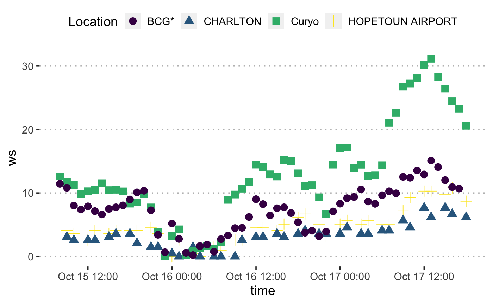

06_Compare_Curyo_weather.Rmdlibrary("tidyverse")
library("lubridate")
library("skimr")
library("ggpubr")
library("kableExtra")
library("scales")
library("here")
library("ChickpeaAscoDispersal")
library("stationaRy")
library("bomrang")
library("clifro")
library("leaflet")
library("htmltools")
theme_set(theme_pubclean(base_size = 14))events <-
read_csv(here("inst/data", "Dispersal experiments dates.csv")) %>%
mutate(`assessment date` = dmy(`assessment date`)) %>%
mutate(exposed = interval(`time out`, `time removed`))The experimental site Curyo is located approximately 120 km north-east of Horsham Grains Innovation park (Department of Primary Industries Victoria). Trap plants were placed on transects on vectors from 290˚ to 20˚ in a north-north-west direction from the ascochyta infected chickpea crop. A single rainfall event at the Curyo site to trigger conidial dispersal between 2019-10-15 08:00:00 and 2019-10-17 18:00:00. However the onsite weather station recorded the wind direction as coming from the north, blowing towards the south.
Conida were recorded travelling up to 75 meters from the infested stubble north, against the wind during the spread event. The collaborating researcher at VDPI confirmed this weather station did not have wind direction calibrated recently.
This vignette is aimed at comparing the wind direction and wind speed to nearby weather stations.
First we will import the weather data from the Curyo which we suspect to have inaccurate wind direction. The data will be formatted and filtered to only contain weather data during when the trap plants were exposed in the field.
Curyo_w <-
read_csv(here(
"inst/data",
"Curyo SPA 2019 - Buffer 0 - 01-01-2019 to 06-12-2019.csv"
)) %>%
select(Time,
'Wind Speed - average (km/h)',
'Wind Direction - average (º)',
"Rainfall - (mm)") %>%
mutate(time = dmy_hm(Time)) %>%
mutate(Location = "Curyo") %>%
select(Location, everything()) %>%
rename(ws = `Wind Speed - average (km/h)`) %>%
rename(wd = `Wind Direction - average (º)`) %>%
rename(rainfall = `Rainfall - (mm)`) %>%
filter(time %within% events[6, "exposed"])The data we download from Bureau of Meteorology (BOM) is in one hour increments, so we will aggregate the 10 minute data to one hourly.
Curyo_w <-
Curyo_w %>%
mutate(Day = day(time)) %>%
mutate(Hour = hour(time)) %>%
group_by(Hour, Day) %>%
summarise(ws = mean(ws),
wd = circular.averaging(wd)) %>%
mutate(Location = "Curyo") %>%
arrange(Day, Hour) %>%
ungroup() %>%
mutate(time = seq(
from = events[events$site == "Curyo", ]$`time out`,
to = events[events$site == "Curyo", ]$`time removed`,
by = "hour"
)) %>%
select(Location, time, everything())Next we will import data from a second weather station at the Curyo field site approximately 10 kilometres from where our trial took place.
Curyo2_w <-
read_csv(here("inst/data",
"DataFarmer_Data_202031081949847.csv"),
skip = 1) %>%
mutate(time = dmy_hm(`Reading Time`)) %>%
mutate(Location = "Curyo_alt") %>%
select(Location, everything()) %>%
rename(ws = `Wind Speed`) %>%
rename(wd = `Wind Direction`) %>%
rename(rh = Humidity) %>%
rename(temp = Temperature) %>%
rename(rainfall = `Rainfall`) %>%
mutate(
wd = case_when(
wd == "N" ~ 0,
wd == "NNE" ~ 22.5,
wd == "NE" ~ 45,
wd == "ENE" ~ 67.5,
wd == "E" ~ 90,
wd == "ESE" ~ 112.5,
wd == "SE" ~ 135,
wd == "SSE" ~ 157.5,
wd == "S" ~ 180,
wd == "SSW" ~ 202.5,
wd == "SW" ~ 225,
wd == "WSW" ~ 247.5,
wd == "W" ~ 270,
wd == "WNW" ~ 292.5,
wd == "NW" ~ 315,
wd == "NNW" ~ 337.5
)
) %>%
filter(time %within% events[6, "exposed"])The alternate Curyo weather station data also need to be aggregated into one hour increments.
Curyo_alt <-
Curyo2_w %>%
mutate(Day = day(time)) %>%
mutate(Hour = hour(time)) %>%
group_by(Hour, Day) %>%
summarise(ws = mean(ws),
wd = circular.averaging(wd)) %>%
mutate(Location = "BCG") %>%
arrange(Day, Hour) %>%
ungroup() %>%
mutate(time = seq(
from = events[events$site == "Curyo", ]$`time out`,
to = events[events$site == "Curyo", ]$`time removed`,
by = "hour"
)[1:58]) %>%
select(Location, time, everything())
skim(Curyo_alt)| Name | Curyo_alt |
| Number of rows | 58 |
| Number of columns | 6 |
| _______________________ | |
| Column type frequency: | |
| character | 1 |
| numeric | 4 |
| POSIXct | 1 |
| ________________________ | |
| Group variables | None |
Variable type: character
| skim_variable | n_missing | complete_rate | min | max | empty | n_unique | whitespace |
|---|---|---|---|---|---|---|---|
| Location | 0 | 1 | 3 | 3 | 0 | 1 | 0 |
Variable type: numeric
| skim_variable | n_missing | complete_rate | mean | sd | p0 | p25 | p50 | p75 | p100 | hist |
|---|---|---|---|---|---|---|---|---|---|---|
| Hour | 0 | 1 | 11.67 | 6.48 | 0.00 | 7.00 | 12.00 | 16.75 | 23.0 | ▆▇▇▇▆ |
| Day | 0 | 1 | 16.03 | 0.77 | 15.00 | 15.00 | 16.00 | 17.00 | 17.0 | ▅▁▇▁▆ |
| ws | 0 | 1 | 7.41 | 3.67 | 0.22 | 4.49 | 7.75 | 10.06 | 15.1 | ▃▃▇▅▂ |
| wd | 0 | 1 | 239.14 | 32.83 | 180.00 | 203.95 | 242.35 | 270.00 | 292.5 | ▇▂▇▇▅ |
Variable type: POSIXct
| skim_variable | n_missing | complete_rate | min | max | median | n_unique |
|---|---|---|---|---|---|---|
| time | 0 | 1 | 2019-10-15 08:00:00 | 2019-10-17 17:00:00 | 2019-10-16 12:30:00 | 58 |
We have data from two weather stations in the field, however lets import data from BOM meteorological stations nearby. We can use the bomrang function sweep_for_stations() to find the closest stations to our experimental site. Because bomrang only obtains historical daily weather information we need to use another package, stationaRy, which can retrieve hourly or 10 minute weather data from the same BOM stations. We then use the station name of the BOM stations in the get_station_metadata() from the stationaRy package to obtain weather station IDs. We need the ids to inform the function get_met_data() from which stations we want weather data.
The get_met_data() function needs to be fun through a loop for each station. We place the weather data from each station into a tibble and store it as an element in a list.
curyo_latlong <- c(-35.779312, 142.778332)
stat.dat <- get_station_metadata() %>%
filter(name %in% sweep_for_stations(curyo_latlong)$name[1:4])
for (i in stat.dat$id) {
if (i == stat.dat$id[1]) {
weather.list <- list()
}
print(stat.dat$name[which(stat.dat$id == i)])
weather.list[[i]] <-
get_met_data(i, years = 2019) %>%
filter(time %within% events[6, "exposed"]) %>%
mutate(Location = stat.dat$name[which(stat.dat$id == i)]) %>%
select(Location, everything())
}## [1] "HOPETOUN AIRPORT"
## [1] "CHARLTON"Next we bind the data all together in a single tibble called weather.vic.
skim(weather.vic)| Name | weather.vic |
| Number of rows | 235 |
| Number of columns | 13 |
| _______________________ | |
| Column type frequency: | |
| character | 2 |
| numeric | 10 |
| POSIXct | 1 |
| ________________________ | |
| Group variables | None |
Variable type: character
| skim_variable | n_missing | complete_rate | min | max | empty | n_unique | whitespace |
|---|---|---|---|---|---|---|---|
| Location | 0 | 1.0 | 3 | 16 | 0 | 4 | 0 |
| id | 117 | 0.5 | 12 | 12 | 0 | 2 | 0 |
Variable type: numeric
| skim_variable | n_missing | complete_rate | mean | sd | p0 | p25 | p50 | p75 | p100 | hist |
|---|---|---|---|---|---|---|---|---|---|---|
| temp | 157 | 0.33 | 15.05 | 4.26 | 6.50 | 12.55 | 14.75 | 17.90 | 24.70 | ▃▇▇▅▂ |
| wd | 45 | 0.81 | 247.52 | 92.43 | 0.02 | 210.00 | 260.00 | 299.84 | 360.00 | ▂▁▃▇▅ |
| ws | 40 | 0.83 | 7.74 | 6.26 | 0.00 | 3.60 | 6.62 | 10.51 | 31.15 | ▇▆▂▁▁ |
| atmos_pres | 157 | 0.33 | 1012.29 | 1.73 | 1008.70 | 1011.20 | 1012.15 | 1013.48 | 1016.10 | ▃▇▇▆▃ |
| dew_point | 157 | 0.33 | 7.28 | 3.51 | -2.60 | 4.80 | 7.25 | 9.65 | 13.50 | ▁▅▇▇▆ |
| rh | 157 | 0.33 | 64.22 | 22.33 | 18.00 | 46.70 | 65.70 | 80.27 | 100.00 | ▃▇▆▇▇ |
| ceil_hgt | 235 | 0.00 | NaN | NaN | NA | NA | NA | NA | NA | |
| visibility | 235 | 0.00 | NaN | NaN | NA | NA | NA | NA | NA | |
| Hour | 118 | 0.50 | 11.73 | 6.45 | 0.00 | 7.00 | 12.00 | 17.00 | 23.00 | ▆▆▆▇▆ |
| Day | 118 | 0.50 | 16.04 | 0.77 | 15.00 | 15.00 | 16.00 | 17.00 | 17.00 | ▅▁▇▁▆ |
Variable type: POSIXct
| skim_variable | n_missing | complete_rate | min | max | median | n_unique |
|---|---|---|---|---|---|---|
| time | 0 | 1 | 2019-10-15 08:00:00 | 2019-10-17 18:00:00 | 2019-10-16 13:00:00 | 59 |
We can visualise the wind speed and direction for each site using windrose.
pw <-
with(
weather.vic,
windrose(
ws,
wd,
Location,
n_col = 4,
legend_title = "Wind speed (m/s)"
)
)
pw +
scale_fill_viridis_d(name = "Wind Speed (m/s)", direction = -1) +
xlab("") +
theme_pubclean()Windroses for four weather stations at or near the Curyo site. The windstation on-site is labeled as ‘Curyo’, the Birchip Cropping Group station which was roughly 10 km away is labelled with ‘BCG’, the remaining two stations are labelled with their respective BOM names, ‘CHARLETON’ and ‘HOPETOUN AIRPORT’.
From the windroses, it is apparent that the Curyo weather station is an outlier for direction and possibly windspeed.
Visually inspect the wind speed data comparing the Curyo site with the Birchip Cropping Group data from 10 kilometres away.
ggplot(weather.vic, aes(x = time, y = ws)) +
geom_point(aes(shape = Location,
colour = Location),
size = 3.5) +
scale_colour_viridis_d()
They do seem correlated but it is not an exact x-y relationship and the Curyo gusts are higher than others, but that seems reasonable.
Note the coordinates for the alternate Curyo station are not included.
sweep_for_stations(curyo_latlong)[1:4] %>%
select(name, lat, lon) %>%
bind_rows(tibble(name = "CURYO",
lat = curyo_latlong[1],
lon = curyo_latlong[2])) %>%
leaflet() %>%
addTiles() %>%
setView(lat = -36,
lng = 142.7,
zoom = 9) %>%
addMarkers(lng = ~ lon,
lat = ~ lat,
popup = ~ htmlEscape(name))